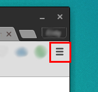
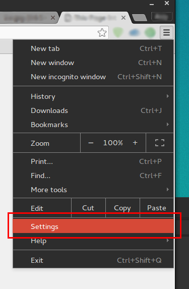

Note: It is HIGHLY recommended that you read this!
| Step # | Description | Screenshot |
| 1. | Click on the "three lines menu" and click on "Settings". |   |
| 2. | Click on the 'Sync' row. Note that under the word 'Sync' it will tell you whether or not sync is on or off. If sync is off, you are good to go! If sync is on, please continue to the next step. | |
| 3. | Flip the 'Sync everything' switch to off if it is not already. | |
| 4. | Flip the 'History' switch to off if it is not already. | |
DynamicHistory is ready to go! Now you may configure it by clicking here (or by clicking the options button in the extensions section). |